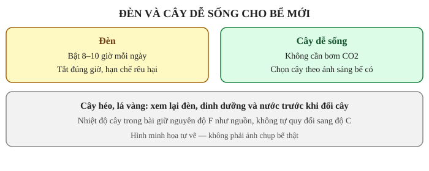

Chọn đèn và cây thủy sinh dễ sống cho bể mới: bắt đầu ít, tăng dần
Tác giả: Ruler
Bể có cây thủy sinh nhìn khác hẳn bể chỉ có đá và lũa. Cây làm bể có chiều sâu, cho cá chỗ trốn, và giúp nước ổn định hơn khi cây đã bén rễ. Nhưng cây cũng là thứ người mới dễ làm hỏng nhất trong bể đầu tiên: mua cây đẹp về trồng xuống nền sỏi, bật đèn 12 giờ mỗi ngày, rồi hai tuần sau cây vàng lá, rụng lá, còn rêu tảo thì phủ kín kính. Người mới thường kết luận mình "không có tay trồng cây", trong khi nguyên nhân thường đơn giản hơn nhiều: cây đó cần nhiều ánh sáng và CO2 hơn bể của bạn đang có, hoặc cây bị trồng sai cách ngay từ đầu.
Bài này viết cho bể mới của người mới: bể nước ngọt, không bơm CO2, đèn LED hoặc đèn huỳnh quang thông thường, cá đã chọn theo Bài 1 và bể đã chọn theo Bài 4. Bài giúp bạn chọn đèn theo cây chứ không chọn đèn theo độ sáng mắt nhìn, chọn cây dễ sống trước rồi mới nghĩ tới cây khó, trồng đúng cách cho từng nhóm cây, và giữ rêu tảo ở mức thấp bằng cách giữ ánh sáng, dinh dưỡng và CO2 ở cùng một mức thấp. Bài không hướng dẫn bể cây kỹ thuật cao dùng CO2 bơm và đèn mạnh, vì bể đó cần chăm sóc khác hẳn và không phù hợp làm bể đầu tiên.
Nguyên tắc đầu tiên: ánh sáng, dinh dưỡng và CO2 phải đi cùng nhau
AquaCompat viết bể cây ít kỹ thuật là bể chạy bằng ánh sáng thấp, không bơm CO2 và bón phân nhẹ khoảng một lần mỗi tuần. Cách này làm được vì cây dễ sống như ráy, dương xỉ Java, ráy nước (cryptocoryne) và rêu Java sống được nhờ khoảng 2–3 ppm CO2 mà mặt nước trao đổi với không khí và cá thở ra, cùng với ánh sáng khoảng 10–20 PAR mà Aquarium Co-Op đưa ra. Bài này trình bày các con số đó đúng như nguồn ghi, và lưu ý PAR là đơn vị đo ánh sáng tới lá cây, không phải số watt ghi trên hộp đèn.
Nguyên tắc quan trọng nhất trong bài này cũng nằm ở AquaCompat: ba yếu tố ánh sáng, CO2 và phân bón liên hệ với nhau. Aquarium Co-Op viết đèn càng sáng thì cây càng cần nhiều CO2 và phân bón, và đèn mạnh mà không có CO2 thường làm tảo thắng cây. Bể cây ít kỹ thuật giữ cả ba yếu tố ở mức thấp cùng nhau, vì vậy không yếu tố nào chạy trước các yếu tố còn lại. Khi bạn tăng đèn mà không tăng CO2 và phân bón, phần ánh sáng thừa sẽ thuộc về tảo, không thuộc về cây. Khi bạn bón phân nhiều mà đèn quá yếu, cây cũng không dùng hết phân, và phân thừa lại nuôi tảo.
AquaCompat viết Tropica cho rằng CO2 là chất dinh dưỡng chính của cây và là yếu tố giới hạn sự phát triển của cây, và cây nhóm Trung bình của Tropica cần 10–15 mg/L CO2, trong khi bể không bơm CO2 chỉ có khoảng 2–3 ppm CO2 tự nhiên. Hai con số này giải thích vì sao bạn không nên mua cây nhóm Trung bình hoặc nhóm Khó về trồng trong bể không bơm CO2 rồi mong cây phát triển như trong ảnh cửa hàng. Hãy bắt đầu bằng cây nhóm Dễ của Tropica, là nhóm sống được mà không cần CO2 bổ sung, rồi sau này khi đã quen chăm cây, bạn mới thử cây cần nhiều ánh sáng và CO2 hơn.
Chọn đèn: đủ sáng cho cây Dễ, không sáng quá mức
Tropica viết cách chọn đèn đơn giản nhất là nhìn số lumen ghi trên bao bì, không nhìn số watt. Watt chỉ cho biết đèn dùng bao nhiêu điện, còn lumen cho biết đèn phát ra bao nhiêu ánh sáng. Các loại đèn khác nhau — bóng sợi đốt, huỳnh quang, LED — không so sánh được với nhau bằng watt, vì vậy hãy tìm số lumen trên bao bì. Tropica khuyên cây nhóm Dễ cần 10–20 lumen cho mỗi lít nước. Cây nhóm Trung bình cần 20–40 lumen cho mỗi lít nước, còn cây nhóm Khó cần hơn 40 lumen cho mỗi lít nước.
Hãy tính thử cho bể 60 lít trong Bài 1 và Bài 4. Với cây nhóm Dễ, bể 60 lít cần khoảng 600–1.200 lumen. Với cây nhóm Trung bình, bể 60 lít cần khoảng 1.200–2.400 lumen. Nếu đèn của bạn ghi 900 lumen, nó đủ cho cây nhóm Dễ trong bể 60 lít, nhưng chưa đủ cho cây nhóm Trung bình. Nếu đèn của bạn ghi 2.400 lumen và bạn chỉ trồng cây nhóm Dễ mà không bơm CO2, đèn đó đang quá sáng cho bể của bạn, và phần sáng thừa rất dễ nuôi tảo.
Tropica cũng viết ánh sáng giảm mạnh theo khoảng cách từ đèn tới đáy bể, và giảm từ giữa bể ra các góc. Tropica đo được khi nâng cây lên cao hơn 10 cm về phía đèn, cây nhận được nhiều hơn 40% ánh sáng. Vì vậy cây cần nhiều sáng nên đặt ở giữa bể, tốt nhất là nâng lên gần đèn bằng cách đặt trên đá hoặc lũa, còn cây nhóm Dễ như dương xỉ Java và ráy nước sống tốt ở mép bể, nơi ánh sáng yếu hơn. Đây là lý do bạn không nên chỉ nhìn tổng lumen của đèn mà bỏ qua vị trí đặt cây: cùng một đèn, cây ở giữa bể nhận được nhiều sáng hơn cây ở góc bể rất nhiều.
Về màu ánh sáng, Tropica viết cây chỉ dùng ánh sáng xanh và đỏ để quang hợp, còn ánh sáng xanh lá cây bị phản xạ lại — đó là lý do chúng ta thấy cây có màu xanh. Nhưng người nuôi vẫn cần ánh sáng xanh lá cây trong bể để thấy đúng màu của cá và cây, nếu không bể sẽ có màu tím. Vì vậy Tropica khuyên dùng đèn có màu ánh sáng gần với ánh sáng ban ngày, với nhiệt độ màu 5.500–6.500 độ K. Đèn có nhiệt độ màu trên 8.000 độ K cho ánh sáng xanh, chỉ nên dùng cho bể nước mặn, còn đèn dưới 4.000 độ K cho ánh sáng vàng hoặc đỏ, giống bóng đèn sợi đốt cũ. Tropica còn khuyên chọn đèn có chỉ số hoàn màu CRI ít nhất 90 để thấy màu tự nhiên nhất của cá và cây. Bài này trình bày các con số đó đúng như Tropica ghi, và lưu ý người mới không cần nhớ hết các con số: khi mua đèn, hãy hỏi cửa hàng đèn đó có bao nhiêu lumen, nhiệt độ màu bao nhiêu độ K, và đèn có hẹn giờ không.
Về loại đèn, Tropica viết bóng đèn sợi đốt cho ít lumen nhất trên mỗi watt điện dùng, đèn huỳnh quang T8 cho gần bằng đèn huỳnh quang T5 trên mỗi watt, nhưng đèn T5 cho nhiều lumen hơn trên mỗi cm chiều dài. Đèn LED hiện đại cho nhiều lumen trên mỗi watt và chiếm ít chỗ, vì vậy có thể lắp nhiều đèn trong một máng đèn. Bài này không khuyên bạn thay đèn huỳnh quang đang dùng tốt chỉ vì đèn LED mới hơn. Nếu bạn đã có đèn huỳnh quang đủ lumen cho cây nhóm Dễ, hãy dùng tiếp. Nếu bạn đang mua đèn mới, đèn LED có hẹn giờ và chỉnh được độ sáng là lựa chọn tiện nhất cho người mới, vì bạn có thể bắt đầu ở độ sáng thấp rồi tăng dần khi cây đã bén rễ.
Một chi tiết nhỏ nhưng rất có ích: Tropica viết dùng chóa phản xạ tốt trong máng đèn có thể cho hiệu quả sử dụng ánh sáng cao hơn tới 4 lần. Nhiều bộ bể khởi đầu được bán kèm máng đèn không có chóa phản xạ, và bạn có thể mua chóa gắn thêm sau. Bài này không khẳng định chóa phản xạ sẽ làm cây của bạn tốt lên gấp 4 lần, vì Tropica viết "tới 4 lần" cho hiệu quả sử dụng ánh sáng, không phải cho tốc độ phát triển của cây. Bài chỉ khuyên bạn kiểm tra máng đèn của mình có chóa phản xạ không, và nếu không có thì cân nhắc gắn thêm trước khi mua đèn mạnh hơn.
Bật đèn bao lâu: bắt đầu 6 giờ, tăng dần lên 8–10 giờ

RSPCA viết chu kỳ đèn 8–10 giờ mỗi ngày, tắt vào ban đêm, là phù hợp cho hầu hết loài cá, và đừng đặt bể cạnh cửa sổ vì nắng có thể làm nước nóng lên tới mức nguy hiểm. Bài 4 cũng đã viết: bắt đầu với 8 giờ đèn mỗi ngày, quan sát một tới hai tuần, rồi mới tăng dần nếu cây phát triển tốt và không có rêu tảo bùng phát. AquaCompat viết bể cây ít kỹ thuật cần ánh sáng thấp khoảng 10–20 PAR, bật đèn khoảng 8–10 giờ mỗi ngày khi cây đã ổn định, và bắt đầu ở khoảng 6 giờ mỗi ngày trong hai tới ba tuần đầu, theo hướng dẫn của Tropica, rồi mới tăng lên.
Ba nguồn này không mâu thuẫn nhau nếu bạn hiểu đúng thứ tự: 6 giờ là mức khởi đầu cho bể mới trồng cây, 8–10 giờ là mức khi cây đã bén rễ và bể đã ổn định. AquaCompat viết Aquarium Co-Op cho phép tới 12 giờ khi cây đã lớn, nhưng khuyên giảm giờ đèn nếu tảo lan ra. Bài này không khuyên bạn bật đèn 12 giờ cho bể mới, vì bể mới chưa có đủ cây lớn để dùng hết ánh sáng, và phần ánh sáng thừa sẽ nuôi tảo. Hãy bắt đầu ở 6 giờ, dùng hẹn giờ để đèn bật và tắt đúng giờ mỗi ngày, quan sát hai tới ba tuần, rồi tăng thêm 30 phút mỗi tuần cho tới khi đạt 8 giờ, và dừng lại ở đó trừ khi cây của bạn rõ ràng đang thiếu sáng và tảo vẫn chưa xuất hiện.
Dấu hiệu cây thiếu sáng và dấu hiệu cây thừa sáng khác nhau. Cây thiếu sáng thường vươn dài, lá nhỏ, thân yếu, lá dưới rụng dần. Cây thừa sáng thường không phải cây bị cháy lá, mà là rêu tảo xuất hiện trước: rêu xanh phủ kính, rêu tóc bám vào lá cây, nước chuyển xanh như Bài 10 đã viết. Khi rêu tảo xuất hiện, hãy giảm giờ đèn xuống trước tiên, rồi mới nghĩ tới việc thay nước hay mua thuốc diệt rêu. AquaCompat viết khi tảo xuất hiện, hãy cắt giờ đèn trước tiên. Đây là bước sửa rẻ nhất và an toàn nhất, và nó hiệu quả hơn nhiều so với việc mua thuốc diệt rêu trong khi đèn vẫn bật 12 giờ mỗi ngày.
Đừng bật đèn cả đêm vì sợ cá tối. Cá cần thời gian tối để nghỉ ngơi, và cây cũng cần thời gian tối. RSPCA viết chu kỳ đèn 8–10 giờ mỗi ngày, tắt vào ban đêm, là phù hợp cho hầu hết loài cá. Đèn bật cả đêm làm cá stress vì không có chu kỳ sáng tối ổn định, và nuôi tảo vì tảo nhận thêm nhiều giờ sáng.
Đừng quên ánh nắng từ cửa sổ. Tropica và RSPCA đều viết đừng đặt bể cạnh cửa sổ. Ánh nắng là ánh sáng bạn không điều khiển được bằng hẹn giờ: đèn LED của bạn có thể chỉ bật 8 giờ, nhưng bể còn nhận thêm sáu giờ nắng chiều thì tổng thời gian sáng đã là 14 giờ. Nếu bể của bạn đang gần cửa sổ và rêu tảo nhiều, hãy dời bể hoặc che nắng ở phía cửa sổ trước khi mua đèn mới hay thuốc diệt rêu.
Bảng 10 cây dễ sống không cần CO2
Bảng dưới đây tóm tắt dữ liệu chăm sóc cây ít kỹ thuật của AquaCompat, tổng hợp từ Tropica, Aquarium Co-Op, Flowgrow và Aquasabi. Bảng ghi rõ chiều cao tối đa là con số cao nhất đã công bố, và khoảng nhiệt độ là khoảng chịu đựng đã công bố, không phải khoảng tối ưu. Người mới nên đọc bảng này như bản đồ chọn cây, không phải như lời hứa cây sẽ cao đúng con số trong bảng trong bể nhà bạn.
| Cây | Ánh sáng | Cần CO2 không | Đặt ở đâu | Tốc độ lớn | Cao tối đa | Khoảng nhiệt độ chịu được |
|---|---|---|---|---|---|---|
| Ráy nana (Anubias barteri var. nana) | Thấp | Không cần | Buộc vào gỗ, đá | Chậm | 4 inch (10 cm) | 54–86°F (12–30°C) |
| Dương xỉ Java (Microsorum pteropus) | Thấp | Không cần | Buộc vào gỗ, đá | Chậm | 16 inch (41 cm) | 39–86°F (4–30°C) |
| Ráy nước (Cryptocoryne wendtii) | Thấp | Không cần | Giữa bể | Vừa | 12 inch (30 cm) | 59–86°F (15–30°C) |
| Rêu Java (Taxiphyllum barbieri) | Thấp | Không cần | Buộc vào gỗ, đá | Vừa | Không công bố | 54–93°F (12–34°C) |
| Lưỡi mác Amazon (Amazon sword) | Thấp tới vừa | Không cần | Cuối bể | Nhanh | 20 inch (51 cm) | 64–86°F (18–30°C) |
| Rong đuôi chó xoắn (Vallisneria spiralis) | Thấp tới vừa | Không cần | Cuối bể | Nhanh | 31 inch (79 cm) | 41–86°F (5–30°C) |
| Rong đuôi chồn (Ceratophyllum demersum) | Thấp tới vừa | Không cần | Thả nổi | Nhanh | 31 inch (79 cm) | 50–85°F (10–29°C) |
| Dương xỉ nước (Ceratopteris thalictroides) | Vừa | Không cần | Cuối bể hoặc thả nổi | Nhanh | Không công bố | 64–86°F (18–30°C) |
| Cỏ thìa lùn (Sagittaria subulata) | Thấp tới vừa | Có thì tốt hơn | Trước bể | Nhanh | 24 inch (61 cm) | 39–86°F (4–30°C) |
| Bóng rêu Marimo (Aegagropila linnaei) | Thấp | Ít cần (theo Tropica) | Trước bể | Rất chậm | 4 inch ngang (10 cm) | 39–82°F (4–28°C) |
Quy đổi trong ngoặc do đội tự tính từ số liệu °F và inch của nguồn: °C = (°F − 32) × 5/9, cm = inch × 2,54, làm tròn tới số nguyên.
Ba cây đầu tiên trong bảng — ráy nana, dương xỉ Java và ráy nước — là ba cây người mới nên mua trước. Chúng chịu được ánh sáng thấp, không cần CO2, và tha thứ cho sai sót nhỏ. Ráy nana và dương xỉ Java lớn chậm, vì vậy bạn sẽ không phải cắt tỉa nhiều trong tháng đầu. Ráy nước lớn vừa phải và làm tốt ở giữa bể. Rêu Java lớn vừa phải, bám vào gỗ và đá như cây thường xuân, và không cắm rễ xuống sỏi, theo Aquarium Co-Op qua AquaCompat.
Ba cây lớn nhanh — lưỡi mác Amazon, rong đuôi chó xoắn và rong đuôi chồn — hợp với người muốn bể nhanh có cây che phủ. Lưỡi mác Amazon có thể cao 20 inch trở lên, vì vậy Aquarium Co-Op xếp nó là cây cuối bể hoặc cây điểm nhấn cho bể lớn hơn. Rong đuôi chó xoắn đẻ cây con bằng thân bò sau vài ngày khi đã bén rễ, và có thể cao tới 31 inch. Rong đuôi chồn tốt nhất là thả nổi, vì Aquarium Co-Op viết đầu cây bị chôn xuống nền có xu hướng thối. Dương xỉ nước có thể trồng ở cuối bể hoặc thả nổi, và cả hai cây thả nổi này đều lớn nhanh và hút dinh dưỡng nhanh, giúp bể mới ít tảo hơn.
Bóng rêu Marimo cần giải thích riêng, vì tên của nó dễ gây hiểu lầm. AquaCompat viết dù có tên là bóng rêu, Marimo thực ra là tảo xanh, không phải rêu hay cây thật. Tên khoa học của nó là Aegagropila linnaei, trước đây là Cladophora aegagropila. Trong thực tế chăm sóc, Marimo vẫn giống cây ít kỹ thuật: cần ánh sáng thấp, lớn rất chậm khoảng 5 mm mỗi năm, và Aquarium Co-Op khuyên giữ nó tránh ánh nắng trực tiếp. Bài này trình bày Marimo đúng như nguồn ghi — một loại tảo sống như cây trong bể — và không gọi nó là cây thật.
Một cây không nên mua cho bể đầu tiên là cây thảm Monte Carlo. AquaCompat viết Monte Carlo được Tropica ghi là cần CO2 để tạo thảm dày, vì vậy nó không thuộc bể ít kỹ thuật. Cỏ thìa lùn là lựa chọn gần hơn: nó lan ra bằng thân bò thành thảm cỏ, và nhu cầu CO2 của nó được ghi là "có thì tốt hơn", không phải bắt buộc. Trong ánh sáng yếu, cỏ thìa lùn sẽ cao hơn trong ánh sáng mạnh, vì vậy trong bể ít kỹ thuật bạn nên kỳ vọng nó như thảm cỏ thấp chứ không phải thảm dày như trong ảnh bể kỹ thuật cao.
Trồng đúng cách: đừng chôn thân rễ của ráy và dương xỉ
Lỗi trồng cây thường gặp nhất ở người mới là chôn cây xuống nền giống như trồng cây trên cạn. Với nhiều cây, cách đó đúng. Với ráy nana và dương xỉ Java, cách đó làm cây chết. AquaCompat viết ráy nana, dương xỉ Java và rêu Java lớn bám vào gỗ và đá chứ không cắm rễ xuống nền. Tropica viết ráy nana làm tốt nhất trên đá hoặc rễ cây với thân rễ để hở, và dương xỉ Java nên buộc hoặc kẹp vào gỗ mà không chôn thân rễ. Thân rễ là phần thân ngang dày mà lá mọc ra từ đó. Nếu bạn chôn thân rễ xuống nền, Tropica cảnh báo thân rễ của ráy có thể thối. Vì vậy hãy buộc ráy và dương xỉ vào lũa hoặc đá bằng chỉ câu hoặc keo dán cây thủy sinh, để thân rễ hở ra ngoài, và để rễ nhỏ của cây tự bám vào gỗ theo thời gian.
Cây cắm rễ như ráy nước và lưỡi mác Amazon thì trồng khác hẳn: cắm rễ xuống nền, để phần ngọn hở ra ngoài, và không chôn sâu tới mức lá non bị vùi. Ráy nước sau khi chuyển chậu thường bị rụng lá, gọi là hiện tượng lá tan. AquaCompat viết Aquarium Co-Op ghi lá ráy nước thường tan sau khi di chuyển, rồi mọc lại. Rụng lá sau khi trồng không có nghĩa là cây đã chết. Hãy để rễ ở yên trong nền và giữ viên phân bón rễ gần đó, vì Aquarium Co-Op xếp ráy nước là cây ăn bằng rễ.
Cây thả nổi như rong đuôi chồn và dương xỉ nước thì không cần trồng xuống nền. Hãy thả chúng nổi trên mặt nước, và cắt tỉa khi chúng che quá nhiều ánh sáng của cây dưới đáy. Cây nổi che bớt ánh sáng cũng là cách giúp cá neon trong Bài 1 và Bài 3: cá neon làm tốt nhất dưới ánh sáng khá mờ, và cây nổi là cách tự nhiên nhất để làm dịu ánh sáng trong bể.
Về nền, AquaCompat viết không phải cây nào cũng cần nền đặc biệt. Ráy, dương xỉ Java và rêu Java bám vào gỗ và đá, ăn chủ yếu từ nước, vì vậy nền không quan trọng với chúng. Cây ăn bằng rễ như ráy nước và lưỡi mác Amazon thì cần dinh dưỡng ở rễ: hoặc dùng nền dinh dưỡng, hoặc dùng viên phân bón rễ trong sỏi thường, đặt cách nhau khoảng 5–6 inch. Bài 4 đã viết cá chuột thích nền cát mịn, vì vậy nếu bể của bạn nuôi cá chuột, hãy chọn cát mịn làm nền rồi bổ sung viên phân bón rễ cho cây cắm rễ, thay vì đổi sang nền hạt sắc chỉ vì cây.
Bón phân nhẹ: một lần mỗi tuần, đúng loại cho từng cây
AquaCompat viết bón phân cho bể cây ít kỹ thuật nhẹ nhàng, khoảng một lần mỗi tuần, và đúng cách cho từng loại cây. Aquarium Co-Op viết rêu, cây nổi và cây bám như ráy và dương xỉ Java ăn chủ yếu từ nước và cần phân bón dạng lỏng thay vì viên phân bón rễ. Ráy nước là cây ăn bằng rễ và cần viên phân bón rễ trong nền trơ, và lưỡi mác Amazon là cây ăn bằng rễ nhiều; Aquarium Co-Op bắt đầu cho lưỡi mác Amazon hai tới ba viên phân bón rễ và thêm dần khi cây lớn lên.
Hãy đặt viên phân bón rễ cách nhau khoảng 5–6 inch thành lưới gần cây ăn bằng rễ, và bổ sung khoảng một tháng một lần. AquaCompat viết hãy chờ 3–4 tuần đầu mới bón phân, vì Tropica viết cây mới mua về từ vườn ươm đã mang theo chất dinh dưỡng dự trữ. Bón phân ngay trong tuần đầu khi cây chưa bén rễ thường chỉ nuôi tảo, không nuôi cây.
Dấu hiệu cây thiếu chất cũng cần quan sát, nhưng đừng vội kết luận chỉ từ một lá vàng. AquaCompat viết Aquarium Co-Op ghi lá non nhợt nhạt hoặc vàng mà gân lá vẫn đậm có thể là dấu hiệu thiếu sắt. Bài này trình bày dấu hiệu đó đúng như nguồn ghi, và khuyên bạn ghi lại lá nào vàng, lá non hay lá già, rồi hỏi cửa hàng thủy sinh trước khi mua phân bón sắt. Lá già vàng và rụng dần ở cây mới trồng thường chỉ là cây đang thích nghi, không phải cây đang thiếu chất.
Một lưu ý quan trọng: đừng bón phân nhiều hơn hướng dẫn trên nhãn với suy nghĩ cây sẽ lớn nhanh hơn. Phân bón thừa trong bể không bơm CO2 sẽ làm tảo lớn nhanh hơn cây, vì cây không đủ CO2 để dùng hết phân. Hãy bắt đầu ở liều thấp nhất trên nhãn, quan sát hai tuần, rồi mới tăng dần nếu cây rõ ràng đang lớn chậm và tảo vẫn chưa xuất hiện.
Rêu tảo: giảm giờ đèn trước, đừng mua thuốc diệt rêu vội
Rêu tảo trong bể cây mới là chuyện thường gặp, không phải dấu hiệu bạn đã thất bại. AquaCompat viết bể cây ít kỹ thuật hỏng khi một yếu tố chạy trước các yếu tố còn lại, hoặc khi cây được chọn cần nhiều hơn những gì bể cho. Ba trường hợp thường gặp nhất là: quá nhiều ánh sáng, chọn sai cây, và lá cây chậm lớn để tảo bám vào. Aquarium Co-Op và Tropica viết cây và tảo cạnh tranh cùng ánh sáng, dinh dưỡng và CO2, vì vậy đèn sáng mà không có CO2 bổ sung sẽ đưa phần thừa cho tảo. Lá ráy sống được nhiều năm, và Tropica ghi lá sống lâu có thể để tảo chậm bám vào. Cây lớn nhanh như dương xỉ nước, mà Tropica viết giúp phòng tảo, sẽ dùng dinh dưỡng thừa trước tảo.
Khi rêu tảo xuất hiện, hãy làm theo thứ tự sau. Thứ nhất, cắt giờ đèn trước tiên, như AquaCompat viết. Giảm từ 8 giờ xuống 6 giờ trong hai tuần, và quan sát tảo có giảm không. Thứ hai, kiểm tra bể có đang nhận nắng từ cửa sổ không, và che nắng nếu cần. Thứ ba, thay nước một phần và hút nhẹ chất thải dưới nền, vì dinh dưỡng thừa từ thức ăn thừa và chất thải của cá cũng nuôi tảo. Bài 5 đã viết cho ăn quá nhiều làm rêu tảo bùng lên, và Aqueon khuyên hút thức ăn thừa ra và giảm lượng ăn xuống một nửa khi thấy dấu hiệu cho ăn quá nhiều. Thứ tư, thêm cây lớn nhanh như rong đuôi chồn hoặc dương xỉ nước để cây dùng dinh dưỡng thừa trước tảo. Chỉ sau khi đã làm bốn bước đó mà tảo vẫn không giảm, hãy hỏi cửa hàng thủy sinh về thuốc diệt rêu, và đừng dùng thuốc diệt rêu trong khi đèn vẫn bật quá lâu và bạn vẫn cho ăn quá nhiều.
Một loại rêu tảo người mới hay nhầm là rêu nâu trên kính và lá cây trong bể mới. Rêu nâu thường xuất hiện trong bể mới và giảm dần khi bể ổn định và cây đã bén rễ. Hãy lau kính bằng miếng bọt biển sạch dành riêng cho bể cá, đừng dùng miếng bọt biển đã dùng với xà phòng. Rêu xanh bám trên kính thì lau bằng dụng cụ lau kính từ tính hoặc miếng bọt biển sạch. Đừng cọ lá cây mạnh tay, vì lá cây non dễ rách. Nếu rêu bám nhiều trên lá ráy, hãy cắt bỏ lá bị bám nặng nhất, vì lá ráy mới sẽ mọc lại, và lá cũ bị tảo bám nặng thường không sạch lại được dù bạn có lau.
Lịch chăm cây 4 tuần đầu cho bể mới
Lịch dưới đây làm cho bể 60 lít, cây nhóm Dễ, không bơm CO2, đèn LED đủ 600–1.200 lumen, hẹn giờ bật đèn 6 giờ mỗi ngày trong hai tới ba tuần đầu. Lịch này là điểm khởi đầu, không phải lịch cố định cho mọi bể. Bạn cần điều chỉnh theo cách cây lớn và tảo có xuất hiện không.
Tuần 1 — Trồng cây và để cây làm quen:
- Buộc ráy nana và dương xỉ Java vào lũa hoặc đá, để thân rễ hở ra ngoài.
- Cắm ráy nước xuống nền cát mịn, để phần ngọn hở ra ngoài.
- Thả rong đuôi chồn nổi trên mặt nước để che bớt ánh sáng.
- Bật đèn 6 giờ mỗi ngày bằng hẹn giờ, tắt vào ban đêm.
- Chưa bón phân trong tuần này, vì cây mới mua về đã mang theo chất dinh dưỡng dự trữ.
- Đừng cắt tỉa cây trong tuần đầu, dù lá có vàng nhẹ.
Tuần 2–3 — Quan sát cây bén rễ:
- Giữ đèn ở 6 giờ mỗi ngày. Nếu cây đã ra lá non và tảo chưa xuất hiện, tăng đèn lên 7 giờ.
- Nếu lá ráy nước tan sau khi trồng, đừng nhổ cây lên. Để rễ ở yên, cây sẽ mọc lá mới.
- Hút nhẹ chất thải trên nền khi thay nước, đừng hút mạnh làm bật rễ cây mới trồng.
- Kiểm tra ráy và dương xỉ có bị chôn thân rễ không, và sửa lại nếu cần.
Tuần 4 — Bón phân nhẹ và tăng đèn lên 8 giờ:
- Bắt đầu bón phân lỏng một lần mỗi tuần cho cây bám và cây nổi, và đặt viên phân bón rễ cho cây cắm rễ nếu chưa đặt.
- Tăng đèn lên 8 giờ mỗi ngày nếu cây đã lớn và tảo chưa bùng phát.
- Cắt tỉa rong đuôi chồn và dương xỉ nước nếu chúng che quá nhiều ánh sáng của cây dưới đáy.
- Ghi lại cây nào lớn tốt, cây nào vàng lá, và giờ đèn hiện tại vào sổ theo dõi bể.
Sau tuần 4, hãy giữ lịch 8 giờ đèn mỗi ngày, bón phân một lần mỗi tuần, và cắt tỉa cây lớn nhanh mỗi hai tuần một lần. Nếu tảo xuất hiện trở lại, hãy giảm đèn xuống 6 giờ trong hai tuần rồi tăng lại từ từ, đừng mua đèn mạnh hơn chỉ vì cây lớn chậm. Cây lớn chậm trong bể không bơm CO2 là bình thường, và AquaCompat viết bể cây ít kỹ thuật chấp nhận lớn chậm để đổi lấy sự ổn định.
Kết luận
Chọn đèn và cây cho bể mới không phải là mua đèn sáng nhất và cây đẹp nhất. Đó là chọn đèn đủ sáng cho cây nhóm Dễ — 10–20 lumen cho mỗi lít nước theo Tropica — bật đèn 6 giờ mỗi ngày trong hai tới ba tuần đầu rồi tăng dần lên 8–10 giờ khi cây đã ổn định, và chọn cây sống được mà không cần CO2 bơm thêm, như ráy nana, dương xỉ Java, ráy nước, rêu Java và lưỡi mác Amazon. Trồng đúng cách cho từng nhóm cây — buộc ráy và dương xỉ vào gỗ, cắm rễ cây ăn bằng rễ xuống nền, thả nổi cây lớn nhanh — bón phân nhẹ một lần mỗi tuần, và giảm giờ đèn trước tiên khi rêu tảo xuất hiện. Khi ánh sáng, dinh dưỡng và CO2 ở cùng một mức thấp, cây sẽ lớn chậm nhưng ổn định, cá sẽ có chỗ trốn, và bể của bạn sẽ ít rêu tảo hơn rất nhiều so với bể bật đèn cả ngày và trồng cây cần nhiều CO2.
Nguồn tham khảo
- AquaCompat, "Low-Tech Planted Tank Guide: No CO2 Needed" — bể cây ít kỹ thuật chạy bằng ánh sáng thấp, không bơm CO2, bón phân nhẹ khoảng một lần mỗi tuần; cây dễ sống sống được nhờ khoảng 2–3 ppm CO2 và ánh sáng khoảng 10–20 PAR; bật đèn 8–10 giờ mỗi ngày khi cây đã ổn định, bắt đầu khoảng 6 giờ mỗi ngày trong hai tới ba tuần đầu theo Tropica; bảng 10 cây không cần CO2, vị trí đặt, tốc độ lớn, chiều cao tối đa và khoảng nhiệt độ chịu được; ráy và dương xỉ Java buộc vào gỗ với thân rễ để hở, ráy nước tan lá sau khi chuyển chậu rồi mọc lại, viên phân bón rễ đặt cách nhau khoảng 5–6 inch (truy cập 23/11/2026): https://aquacompat.com/learn/low-tech-planted-tank/
- Tropica, "The right light for your aquarium" — cây nhóm Dễ cần 10–20 lumen cho mỗi lít nước, cây nhóm Trung bình cần 20–40 lumen, cây nhóm Khó cần hơn 40 lumen; nhiệt độ màu 5.500–6.500 độ K, chỉ số hoàn màu CRI ít nhất 90; nâng cây lên 10 cm về phía đèn thì cây nhận được nhiều hơn 40% ánh sáng; chóa phản xạ tốt cho hiệu quả sử dụng ánh sáng cao hơn tới 4 lần; CO2 là chất dinh dưỡng chính và là yếu tố giới hạn sự phát triển của cây (truy cập 23/11/2026): https://tropica.com/blogs/getting-started/light
- RSPCA, "Choosing an Aquarium for Pet Fish" — chu kỳ đèn 8–10 giờ mỗi ngày, tắt vào ban đêm, không đặt bể cạnh cửa sổ vì nắng có thể làm nước nóng lên tới mức nguy hiểm; cá neon làm tốt nhất dưới ánh sáng khá mờ, thích nền cát, lũa và cây nổi che bớt ánh sáng (truy cập 23/11/2026): https://science.rspca.org.uk/en/web/rspca/adviceandwelfare/pets/fish/environment
- Aqueon, "How to Properly Feed Your Fish" — dấu hiệu cho ăn quá nhiều gồm rêu tảo phát triển quá mức, hút thức ăn thừa ra và giảm lượng ăn xuống một nửa (truy cập 23/11/2026): https://www.aqueon.com/articles/how-to-properly-feed-your-fish